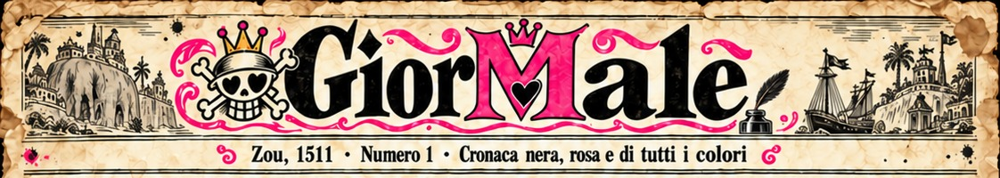
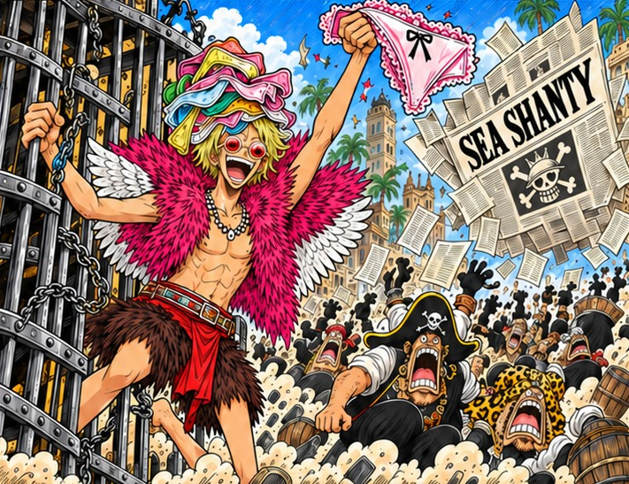
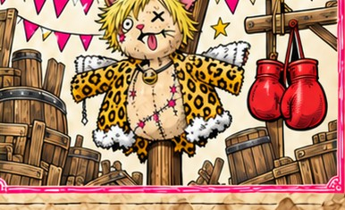

Zou, 1511. Brutte notizie per chi crede che il male non sia ovunque! Nei giorni scorsi Capitan Mutanda, l'alato più disturbante del Nuovo Mondo, noto per l'impeccabile mantellina di piume e per una collezione di biancheria che fa invidia alle sartorie di Water Seven, è stato affrontato da un gruppo di nemici.
Appena uscito l'ultimo numero del Sea Shanty, i nemici lo hanno liberato in fretta e furia, senza chiedere un solo Berry. Ufficialmente per colpa dell'articolo. Ma un avversario così, con gli occhi del Ducato puntati addosso e quella biancheria a portata di mano, è più pericoloso di una nube acida.
Sarà anche per quanto narrato dal Sea Shanty. Ci accusa di essere i cattivi? Esatto, siamo proprio noi. L'imboscata, le telecamere, il gatto nel fango, la trasmissione. Tutto nostro, e ne andiamo fieri. Così cattivi che persino il Fantasma dell'Opera è venuto a trovarci, ha visto il video e ci ha scritto la colonna sonora. Peccato che, tra una nota di flauto e l'altra, nessuno sia andato a recuperare l'amico rimasto nel fango. Caro pirata, lei non ci ha smascherati: ci ha assistiti. E con la musica.
Ci accusa anche di lavorare per lo Shichibukai? Centrato in pieno. Lapin Von Juste I ha la propria consulenza, la più deplorevole del Ducato. Una prova? Chi ha osato lanciare la sfida al duello sacro dovrà vedersela con il Genio del Male in persona: i Dottori Turco e Condoriano sono avvisati. Mr. Sbuffo, interpellato sulla questione: «Uff».
Ci definiscono cattivi? Ringraziamo per il complimento. Per festeggiare, la redazione annuncia la Fiera del Pirata, il [Giorno X], nel cuore delle nubi acide: c'è chi a Zou cerca la cura, noi partiamo dalle ferite. Cuccioli e Moschettieri potranno sfogarsi a suon di pugni con un manichino dello Stregatto a grandezza naturale. Ingresso libero, guantoni a noleggio. Il fantoccio avrà baffi autentici. Almeno uno.
Per chi trova i manichini troppo tranquilli ci sarà invece una vera e propria rissa al gusto pirata tra le nebbie, con fuochi d'artificio, armi per l'occasione e pomodori da lanciare ai partecipanti. Per le lamentele c'è l'apposito sportello: chi ha qualcosa da ridire venga pure di persona. Lo aspettiamo.
Capitan Mutanda è sano, salvo e, ci assicurano, perfettamente vestito. Alla redazione resta una sola domanda per i lettori: se i pirati difendono la libertà e la tengono per loro creando scompiglio, chi li affronterà per dare qualcosa a Zou?
